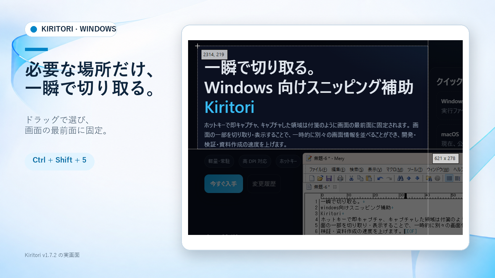
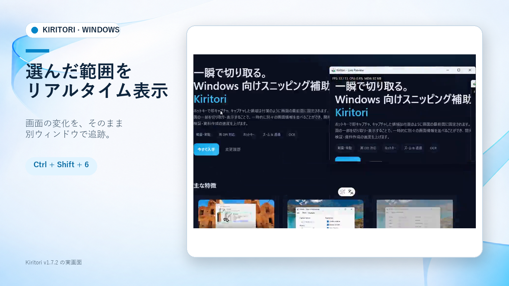
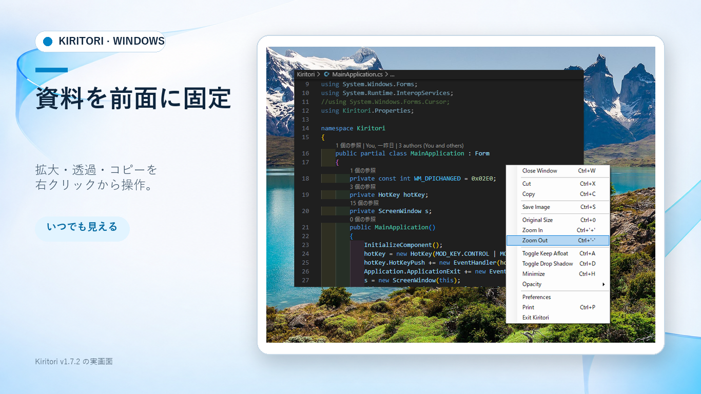
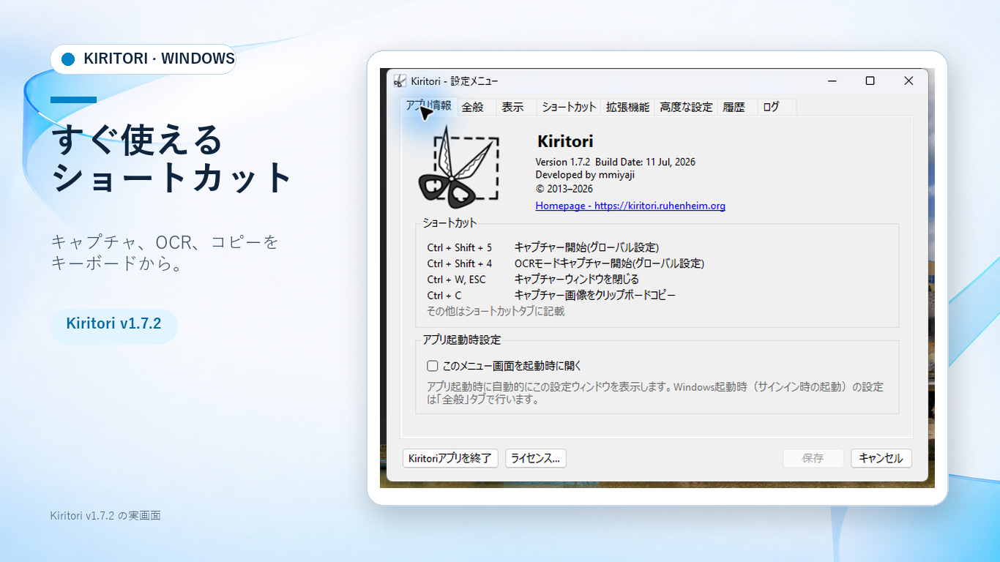

切り取り・固定
必要な範囲だけをキャプチャし、常に手前へ表示します。
Capture any region and keep it always on top.
画面を切り取り、付箋のように最前面へ固定。文字をOCRでコピーし、変化する領域はライブプレビューで追跡できます。
Capture, pin, read, and follow any part of your screen without breaking your flow.

操作を増やさず、画面上の情報を見やすく、扱いやすくします。

必要な範囲だけをキャプチャし、常に手前へ表示します。
Capture any region and keep it always on top.

拡大、透明度、コピー、保存を右クリックメニューから操作。
Zoom, adjust opacity, copy, or save in place.

画像内の文字を認識。よく使う操作をキーから即実行できます。
Extract text and work quickly with familiar shortcuts.
動画が再生できない環境ではMP4へ自動的にフォールバックします。
Windows Graphics Capture と Direct3D 11 を使うGPUキャプチャを追加。AutoモードはGPUを優先し、必要に応じてGDIへ切り替えます。
Live Preview now prefers GPU capture, with automatic GDI fallback for compatibility.